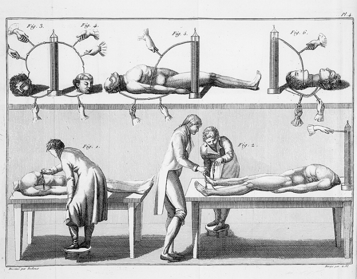

Our centuries-long fascination with Frankenstein’s monster—which has inspired dozens of films, including the recent Guillermo del Toro movie—might have been sparked by a scholarly feud over frogs. An electric conflict that also gave us the battery.
In the 18th century, scientists sought to pinpoint electricity’s influence on living things, and whether it could be wielded to resurrect the dead. Italian physicist and physician Luigi Galvani claimed to have discovered an intrinsic form of electricity within animals after observing that frogs’ severed legs appeared to move on their own. For example, he stuck the creature’s limb on a brass hook and, when cutting it with a steel scalpel, it twitched.
This intrigued Italian physicist Alessandro Volta, who later found that the electrical current jiggling these frog legs emerged from the charge moving between two types of metals—not from the frog limb itself. The isolated frog leg was just serving as the conductor. He later went on to invent an early version of today’s batteries, known as a “Voltaic pile,” based on this finding.

IT’S ALIVE!: An illustration from Giovanni Aldini’s 1804 book describing his experiments jolting human bodies with electricity. Credit: Wellcome Collection gallery / Wikimedia Commons.
Galvani’s nephew, Giovanni Aldini, was intrigued by this work and wondered if it could somehow be used to reanimate bodies. But he took things a step further, experimenting on other animals as well as humans. Using a Voltaic pile, Aldini began showcasing his work on non-human animals and on executed prisoners throughout Europe—at the time, European scientists took an interest in studying the bodies of these individuals to learn how their systems function shortly after death. To the horror of observing audiences, Aldini stimulated decapitated human bodies with electricity and even prompted some to sit upright.
In 1803, Aldini made headlines when experimenting with the body of George Forster, who had recently been executed for murder. In London, Aldini placed electrodes on Forster’s body. The deceased man’s “jaws quivered” and “entire head moved.” In the same experiment, the audience observed how Forster’s “right hand was raised and clenched, and the legs and thighs were set in motion.” To some onlookers, it appeared as if Aldini had revived him.
While the provocative exhibition generated plenty of press at the time, Frankenstein author Mary Shelley was a child when this show was put on. But later connections may have exposed her to Aldini’s work and similar experiments. Her orbit included prominent electrical researchers, who were friends with her father, William Godwin; and her doctor, John Abernethy, claimed that “the phaenomena of electricity and of life correspond.”
Read more: “The Body Electric”
In the summer of 1816, Shelley spent a summer in Switzerland with a group of literati including poet Lord Byron and her future husband Percy Shelley. On this trip, they allegedly spoke of “galvanism,” a term referencing Luigi Galvani’s work and other electricity experiments that followed. In the 1831 preface to Frankenstein, Shelley notes how the idea influenced her creative process: “Perhaps a corpse would be re-animated; galvanism had given a token of such things: perhaps the component parts of a creature might be manufactured, brought together, and endued with vital warmth.”
Even if Aldini’s dreams never fully came to life, the fiction it spawned has continued to animate our imaginations. 
EnjoyingNautilus? Subscribe to our free newsletter.
Lead image: Theodor von Holst / Wikimedia Commons